인터넷정보관리사-2급 (2018-12-08 기출문제)
1과목: 인터넷의 이해
1. 다음 보기 중 인터넷 기술발전 순서로 올바른 것은?
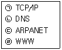
- ㉠ - ㉡ - ㉢ - ㉣
- ㉢ - ㉠ - ㉡ - ㉣
- ㉢ - ㉡ - ㉠ - ㉣
- ㉠ - ㉢ - ㉣ - ㉡
(정답률: 75%)

2. 다음 중 우리나라 인터넷의 시초로 구미 한국 전자기술연구소(KIET)와 서울대학교를 연결한 전산망은 무엇인가?
- SDN
- KISA
- HANA
- KT
(정답률: 59%)
3. 다음 중 HTML, CSS, XML등의 표준화 작업을 수행하는 국제 인터넷 기구는?
- ICANN
- W3C
- IPC
- IANA
(정답률: 56%)
4. 다음 중 IPv4 클래스에 대한 설명으로 가장 거리가 먼 것은?
- A클래스는 많은 호스트를 가진 네트워크에 사용된다.
- B클래스의 네트워크 주소범위는 192~223이다.
- C클래스의 사용 가능한 호스트 수는 254개이다.
- D클래스의 주 용도는 실험용도이다.
(정답률: 57%)
5. 다음 중 IPv6 주소로 할당되는 유형이 아닌 것은?
- 바이캐스트
- 유니캐스트
- 애니캐스트
- 멀티캐스트
(정답률: 75%)
6. 다음 중 도메인 네임 선정원칙에 대한 설명으로 잘못된 것은?
- 영문은 대소문자의 구분을 하지 않는다.
- 첫 글자는 영어로 시작해야 한다.
- 도메인 네임의 길이는 최대 63자 이다.
- 언더바와 콤마는 사용할 수 없다.
(정답률: 70%)
7. 다음 중 도메인 네임의 신규 등록 절차로 올바른 것은?
- 도메인 검색 및 입력 → 결제하기 → 등록정보 입력 → 신청완료
- 신청완료 → 결제하기 → 도메인 검색 및 입력 → 등록정보 입력
- 도메인 검색 및 입력 → 결제하기 → 신청완료 → 등록정보 입력
- 도메인 검색 및 입력 → 등록정보 입력 → 결제하기 → 신청완료
(정답률: 72%)
8. 다음 중 IPv6의 주소길이는 몇 비트인가?
- 32비트
- 64비트
- 128비트
- 256비트
(정답률: 73%)
9. 다음 TCP/IP 프로토콜 중, OSI 7계층의 네트워크 계층에 관련된 프로토콜로 짝지어진 것은?
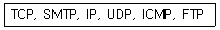
- IP, ICMP
- TCP, IP
- FTP, UDP
- ICMP, SMTP
(정답률: 54%)
10. 다음 중 전자우편 보안관련 프로토콜로 짝지어진 것은?
- SMTP, IMAP
- SMTP, PGP
- PEM, PGP
- PEM, IMAP
(정답률: 47%)
11. 다음 OSI 7계층 중, 허브와 리피터 등 관련 장비를 이용하여 기능적, 절차적 규격을 서비스하는 계층은?
- 전송 계층
- 네트워크 계층
- 데이터링크 계층
- 물리 계층
(정답률: 58%)
12. 소셜 미디어의 형태와 특징이 잘못 짝지어진 것은?
- 블로그–글자 수에 제한을 받지 않음, 데이터베이스 역할
- 소셜 네트워크–단문을 주고받는 서비스, 강한 휘발성
- 위키피디아–폐쇄성, 목적성
- UCC–일반인들이 정보생산에 참여
(정답률: 75%)
13. 소셜 미디어의 주요특징 중 다음에서 설명하는 것은 무엇인가?
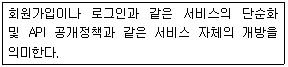
- 개방형 플랫폼
- 콘텐츠의 개인화
- 콘텐츠의 공유
- 통합형 플랫폼
(정답률: 75%)
14. 다음 중 클라우드 컴퓨팅 서비스의 운용 형태로 가장 거리가 먼 것은?
- 하이브리드 클라우드
- 인터랙티브 클라우드
- 퍼블릭 클라우드
- 프라이빗 클라우드
(정답률: 52%)
15. 다음 중 메신저에서 자신을 대신하여 대화에 참여하는 상징적인 그림이나 아이콘을 무엇이라 하는가?
- 아바타
- 두문자어
- 이모티콘
- 스마일리
(정답률: 70%)
16. 다음 중 요소기술로서 Resource POOL, Hypervisor를 사용하는 클라우드 컴퓨팅 솔루션 기술은?
- 자원 유틸리티
- 오픈 인터페이스
- 서비스 프로비저닝
- 가상화 기술
(정답률: 52%)
17. 다음은 무엇에 대한 설명인가?
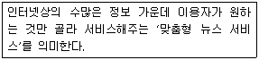
- IoT
- VoIP
- SSO
- RSS
(정답률: 62%)
18. 클라우드 서비스 유형 중 이용자가 원하는 소프트웨어를 제공하는 것은?
- IaaS
- PaaS
- SaaS
- UaaS
(정답률: 67%)
19. 다음 중 10cm 이내의 가까운 거리에서 인식 가능한 근거리 무선통신으로 13.56MHz 대역을 사용하는 비접촉식통신 기술은?
- RFID
- NFC
- USN
- LTE
(정답률: 73%)
20. 다음에서 설명하는 기술은 무엇인가?
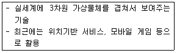
- 증강현실
- 가상현실
- 스마트 그리드
- 빅데이터
(정답률: 73%)
21. 개인정보의 유형과 종류가 잘못 짝지어진 것은?
- 가족정보 – 가족구성원의 이름, 출생지, 직업
- 조직정보 - 노조가입, 정당가입, 클럽회원
- 의료정보 - 신체장애, 지문, 홍채
- 병역정보 – 군번, 계급, 근무부대
(정답률: 66%)
22. 개인정보보호법에 관한 설명이다. 괄호 안에 올바른 항목으로 짝지어진 것은?
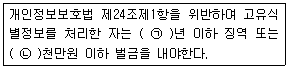
- ㉠-5, ㉡-5
- ㉠-5, ㉡-3
- ㉠-3, ㉡-5
- ㉠-3, ㉡-3
(정답률: 67%)
23. 저작권법에서 저작물, 실연, 데이터베이스를 공중이 수신하거나 접근할 목적으로 유무선 통신방법으로 송신하거나 이용에 제공하는 것을 의미하는 용어는?
- 공중송신
- 방송
- 전송
- 배포
(정답률: 63%)
24. 다음 중 공인인증서에 포함되어야할 사항으로 잘못된 것은?
- 가입자의 이름
- 공인인증서의 일련번호
- 공인인증서의 발급일자
- 공인인증서임을 나타내는 표시
(정답률: 59%)
25. 다음 중 컴퓨터 프로그램 보호법에서 프로그램을 발행하거나 이를 공중에게 제시하는 행위를 나타내는 용어는?
- 공표
- 배포
- 발행
- 전송
(정답률: 52%)
26. 다음 중 공인인증서를 발행하는 6대 공인 인증기관이 아닌 것은?
- 금융결제원
- 한국인터넷진흥원
- (주)코스콤
- 한국무역정보통신
(정답률: 61%)
27. 다음 중 저작권법에서 저작재산권은 저작자 사후 몇 년까지 존속기간을 인정하는가?
- 50년
- 70년
- 100년
- 무기한
(정답률: 76%)
28. 다음 중 중앙처리장치 요소의 기능 설명으로 가장 거리가 먼 것은?
- 프로그램 카운터–다음에 실행할 명령어의 주소를 기억한다.
- 명령 레지스터–다음에 실행할 명령어를 기억한다.
- 누산기–연산 데이터의 중간 연산결과를 저장한다.
- 제어장치–명령어를 순서대로 실행할 수 있도록 제어하는 역할을 수행한다.
(정답률: 47%)
29. 다음 중 입력장치에 해당하지 않는 것은?
- 플로터
- 조이스틱
- 디지타이저
- 마이크
(정답률: 69%)
30. 다음 인터넷에 관련된 설명이다. 설명 중 잘못된 것은?
- 전용선의 종류는 T1-E1-T2-E3 순서로 속도가 빨라진다.
- 리피터는 손실된 신호를 증폭하는 역할을 한다.
- 게이트웨이는 한 네트워크에서 다른 네트워크로 들어가는 역할을 하는 장치이다.
- ISDN은 속도가 가장 빠른 B채널과 중간 D채널, 그리고 가장 느린 H채널이 있다.
(정답률: 54%)
31. 다음 중 개체 관련 태그와 그 기능이 알맞게 짝지어진 것은?
- <object> - 개체의 파라미터
- <param> - 개체 삽입
- <embed> - 멀티미디어 재생
- <applet> - 오디오 재생
(정답률: 58%)
32. 다음에서 설명하는 정보통신망의 종류는?
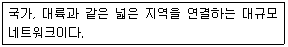
- LAN
- WAN
- VAN
- ISDN
(정답률: 79%)
33. 다음에서 설명하는 네트워크 토폴로지는 무엇인가?
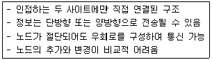
- 링형
- 스타형
- 트리형
- 버스형
(정답률: 70%)
2과목: 인터넷 자원 탐색
34. 다음 중 텍스트 기반 웹 브라우저를 모두 고른 것은?
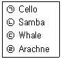
- ㉠, ㉡
- ㉠, ㉢
- ㉡, ㉣
- ㉢, ㉣
(정답률: 68%)
35. 다음 설명에 해당하는 웹 브라우저는?
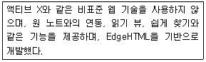
- 엣지
- 크롬
- 모질라
- 오페라
(정답률: 61%)
36. 그림은 엣지 브라우저의 메뉴 중 일부이다. (가)와 유사한 기능을 하는 크롬 브라우저 메뉴는?
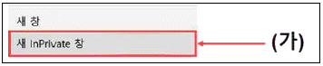
- 새 창
- 새 탭
- 새 시크릿 창
- 새 사생활 보호 모드 창
(정답률: 69%)
37. 다음 그림은 웹 사이트 암호 저장과 관련한 팝업이다. 이와 관련 있는 익스플로러의 인터넷 옵션 하위 메뉴는?
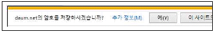
- 고급 - 설정
- 내용 – 인증서
- 내용 – 자동 완성
- 보안 – 사용자 지정
(정답률: 45%)
38. 다음 사례에 적절한 인터넷 익스플로러의 기능은?
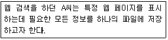
- 즐겨찾기
- 웹 페이지 저장
- 오프라인으로 작업
- 웹 페이지 보관 파일
(정답률: 60%)
39. 구글 크롬에서 '설정을 기본 값으로 복원'을 실행하였을 경우 변경되는 내용을 다음에서 모두 고른 것은?
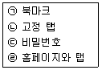
- ㉠, ㉡
- ㉠, ㉢
- ㉡, ㉣
- ㉢, ㉣
(정답률: 61%)
40. 인터넷 익스플로러 11에서 명령 모음–안전 메뉴에서 설정할 수 있는 기능은?
- 다운로드 보기
- 호환성 보기 설정
- 고정된 사이트로 이동
- Do Not Track 요청 켜기
(정답률: 62%)
41. 다음 사례를 해결하기 위한 '인터넷 옵션'의 탭 메뉴는?
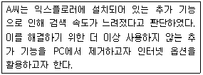
- 고급
- 보안
- 일반
- 프로그램
(정답률: 66%)
42. 다음 사례에서 A씨에게 적절한 크롬의 설정 메뉴는?
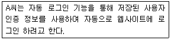
- 동기화
- 접근성
- 비밀번호
- 개인정보 및 보안
(정답률: 48%)
43. 검색 엔진의 색인 생성을 개선하기 위한 적절한 방법을 다음에서 모두 고른 것은?
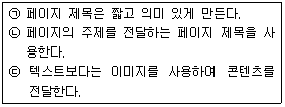
- ㉠, ㉢
- ㉠, ㉡
- ㉡, ㉢
- ㉠, ㉡, ㉢
(정답률: 65%)
44. 다음 중 ㉠과 ㉡에 들어갈 검색엔진 관련 용어가 알맞게 짝지어진 것은?
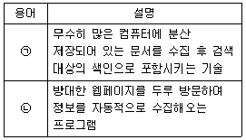
- ㉠:색인, ㉡:인덱스
- ㉠:색인, ㉡:크롤링
- ㉠:메타검색, ㉡:로봇 에이전트
- ㉠:크롤링, ㉡:스파이더
(정답률: 49%)
45. 다음 설명과 가장 관련 있는 용어는?
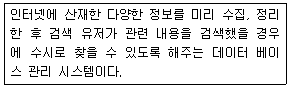
- DBMS
- 검색엔진
- 정보검색
- 웹 호스팅
(정답률: 49%)
46. 동일한 검색어로 검색 시 검색엔진마다 검색 결과가 다른 이유로 가장 적절한 것은?
- 로봇의 동작 오류이다.
- 검색엔진 소프트웨어의 버전 차이이다.
- 로봇의 사이트 방문 전략이 동일하기 때문이다.
- 검색엔진의 데이터베이스 양이 다르기 때문이다.
(정답률: 68%)
47. 다음 중 robots.txt에 입력할 로봇 배제 표준 중 '배제'의 의미를 갖는 예약어는?
- User-agent :
- Disallow :
- Terminate :
- allow-agent :
(정답률: 68%)
48. 다음 사례와 가장 관련이 있는 네이버의 서비스는?
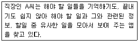
- 타르트
- 파파고
- 네이버 알파
- 스마트보드
(정답률: 47%)
49. 다음 중 우리나라 최초의 한글 검색 엔진은?
- 까치네
- 와카노
- 코시크
- 미스다찾니
(정답률: 50%)
50. 다음 중 주제별 검색엔진의 특징과 거리가 먼 것은?
- 주제별로 분류해 둔 카테고리가 존재 한다.
- 사용자가 자발적으로 자신의 웹페이지를 요청하여 등록할 수 있다.
- 단어별 검색엔진에 비해 데이터베이스의 양이 많다.
- 검색 중간에 검색단계를 잘못 거칠 경우 원하는 정보를 찾을 수 없다.
(정답률: 61%)
51. 다음 설명에 해당하는 정보검색 용어는?
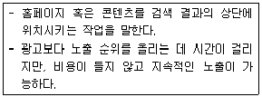
- CPC(Cost Per Click)
- PPC(Pay Per Click)
- SEM(Search Engine Marketing)
- SEO(Search Engine Optimization)
(정답률: 52%)
52. 다음 사례에서 재현율은?
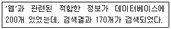
- 15%
- 45.9%
- 85%
- 114%
(정답률: 72%)
53. 다음 설명에 해당하는 정보검색 관련 용어는?
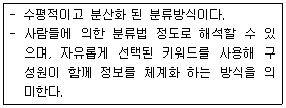
- 폭소노미
- 택소노미
- 옐로우 페이지
- 링크 우선순위
(정답률: 55%)
54. 다음 사례와 관련 있는 검색 결과 제공방식은?
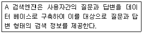
- 지식 검색
- 사이트 검색
- 키워드 검색
- 디렉터리 검색
(정답률: 62%)
55. 다음 사례에 가장 적절한 다음(Daum)의 서비스는?
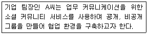
- 브런치
- 블로그
- 아지트
- 티스토리
(정답률: 52%)
56. 다음 사례와 가장 관련이 있는 구글 서비스 아이콘은?
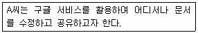
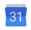
(정답률: 70%)
57. 그림은 트위터 고급 검색 화면이다. 이에 대한 설명으로 옳은 것은?
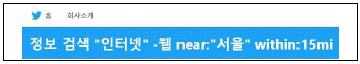
- “웹”을 반드시 포함한다.
- “인터넷” 이라는 문구를 그대로 포함한다.
- “정보” 또는 “검색” 중 한 단어를 포함한다.
- 서울에서 15마일 이내의 위치에서 작성한 것이다.
(정답률: 64%)
58. 그림은 정보 검색의 단계별 발전모델이다. ㉠ 단계의 정보검색 특성을 다음에서 고른 것은?
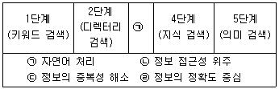
- ㉠, ㉡
- ㉠, ㉣
- ㉡, ㉢
- ㉢, ㉣
(정답률: 45%)
59. 다음 중 비공식 사이트에 해당하는 정보 출처는?
- 대학교
- 블로그
- 정부기관
- 관련 협회
(정답률: 70%)
60. 다음에서 설명하는 검색엔진의 구성 요소는?
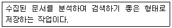
- Index
- Crawl
- Search
- Leakage
(정답률: 66%)
61. 다음 중 불용어(Stop Word)에 해당하는 것은?
- 명사
- 동의어
- 유의어
- 조동사
(정답률: 56%)
62. 다음 중 1차 정보에 해당되지 않는 것은?
- 학위논문
- 회의자료
- 특허정보
- 서지
(정답률: 60%)
63. 다음 2차 정보원 중, '사실정보원'에 해당하는 정보원은?
- 색인지
- 초록집
- 백과사전
- 연속간행물
(정답률: 43%)
64. 과학 분야에 특화된 인터넷 정보원을 다음에서 모두 고른 것은?
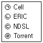
- ㉠, ㉡
- ㉠, ㉢
- ㉡, ㉣
- ㉢, ㉣
(정답률: 54%)
65. 다음 검색 예시에서 사용된 검색 방법을 다음에서 모두 고른 것은?
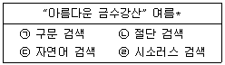
- ㉠, ㉡
- ㉠, ㉢
- ㉡, ㉣
- ㉢, ㉣
(정답률: 48%)
66. 다음 중 정보원으로 데이터베이스를 선정할 때 중요한 요소를 모두 고른 것은?
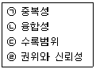
- ㉠, ㉡
- ㉠, ㉣
- ㉡, ㉢
- ㉢, ㉣
(정답률: 51%)
3과목: 인터넷 윤리
67. 다음 중 인터넷 중독의 원인과 가장 거리가 먼 것은?
- 인터넷의 익명성
- 인터넷의 비대면성
- 사회 기능의 약화
- 가정 기능의 확대
(정답률: 71%)
68. 다음 중 인터넷 중독의 3단계를 순서대로 알맞게 나열한 것은?
- 호기심-현실탈출-대리만족
- 대리만족-현실탈출-호기심
- 대리만족-호기심-현실탈출
- 호기심-대리만족-현실탈출
(정답률: 69%)
69. 다음 설명에 해당하는 용어는 무엇인가?
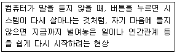
- 인터넷 증후군
- 리셋 증후군
- 거북목 증후군
- 디지털 디톡스
(정답률: 79%)
70. 다음 중 리처드 루빈이 제시한 7가지 정보 통신기술의 유혹 요인과 거리가 먼 것은?
- 국제적 범위
- 매체의 본질
- 중독성
- 최소 투자에 의한 최대 효과
(정답률: 45%)
71. 다음 중 인터넷 과다사용의 증상과 가장 거리가 먼 것은?
- 강박적 사용과 집착
- 내성과 금단
- 일상생활 기능 장애
- 현실에서의 대인관계 지향
(정답률: 70%)
72. 다음 중 인터넷 전화(VoIP)를 이용하여 사용자가 비밀번호 등을 입력하도록 유도한 뒤, 미리 설치한 중계기로 이를 탈취하는 인터넷 사기 유형은?
- 피싱
- 비싱
- 스미싱
- 파밍
(정답률: 50%)
73. 다음에서 설명하는 OECD 프라이버시 가이드라인의 개인정보원칙으로 맞는 것은?
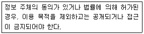
- 공개의 원칙
- 이용 제한의 원칙
- 수집 제한의 원칙
- 목적 명확화의 원칙
(정답률: 52%)
74. 다음 설명에 해당하는 인터넷 윤리의 기능은 무엇인가?
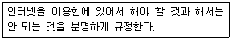
- 예방
- 처방
- 보편
- 책임
(정답률: 38%)
75. 다음 중 인터넷 윤리의 기능에 포함되지 않는 것은?
- 세계 윤리
- 책임 윤리
- 부분 윤리
- 변혁 윤리
(정답률: 49%)
76. 다음 중 인터넷 중독을 설명하는 용어로 가장 거리가 먼 것은?
- 웨바홀리즘(Webaholism)
- 디지털 디톡스(Digital Detox)
- 인터넷 의존(Internet Dependence)
- 인터넷 증후군(Internet Syndrome)
(정답률: 60%)
77. 다음 중 킴벌리 영이 분류한 인터넷 중독의 유형이 아닌 것은?
- 컴퓨터 중독
- 네트워크 강박증
- 인터넷 게임 중독
- 사이버 교제 중독
(정답률: 42%)
78. 다음 중 이메일 관련 네티켓으로 가장 거리가 먼 것은?
- 날마다 메일을 체크하고, 중요하지 않은 메일은 삭제한다.
- 자신의 아이디나 비밀번호를 타인에게 절대 공개하지 않는다.
- 메시지는 가능한 길고 자세히 작성한다.
- 메일을 보내기 전에 주소가 맞는지 확인한다.
(정답률: 70%)
79. 다음 설명에 해당하는 용어는 무엇인가?
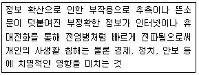
- 스푸핑
- 핵티비즘
- 네카시즘
- 인포데믹스
(정답률: 61%)
80. 사이버 범죄의 특성과 가장 거리가 먼 것은?
- 자신을 노출시키지 않고 활동할 수 있다.
- 범죄자와 피해자의 직접적인 대면 접촉 없이 범죄가 이루어진다.
- 증거 확보와 범인 검거가 쉬운 편이다.
- 네트워크를 이용한 원격지 범죄가 가능하다.
(정답률: 72%)
1. ARPANET: 1960년대 말 미국 국방부에서 개발한 네트워크로, 인터넷의 시초가 되었습니다. 이 단계에서는 컴퓨터와 컴퓨터가 직접 연결되어 있었습니다. 따라서 "㉠"가 가장 먼저 일어난 일입니다.
2. TCP/IP: 1970년대 말부터 1980년대 초까지 개발된 프로토콜로, 컴퓨터와 컴퓨터를 연결하는 방식을 개선했습니다. 이 단계에서는 인터넷이라는 개념이 처음 등장했습니다. 따라서 "㉡"가 그 다음에 일어난 일입니다.
3. 웹의 등장: 1990년대 초반, 팀 버너스리가 만든 월드 와이드 웹(WWW)이 등장했습니다. 이를 통해 인터넷이 대중화되었고, 인터넷을 이용한 정보 검색과 공유가 가능해졌습니다. 따라서 "㉢"가 그 다음에 일어난 일입니다.
4. 모바일 인터넷: 2000년대 중반부터 스마트폰이 대중화되면서 모바일 인터넷이 등장했습니다. 이를 통해 언제 어디서나 인터넷을 이용할 수 있게 되었습니다. 따라서 "㉣"이 가장 마지막에 일어난 일입니다.
따라서 올바른 순서는 "㉢ - ㉠ - ㉡ - ㉣"입니다.